A Mini-Tutorial in SADL Version 3
Last revised
10/29/2020
by A. W. Crapo.
Introduction
This mini-tutorial will lead you through some of the basic features of SADL
Version 3. It will familiarize you with the basics of SADL and introduce you to
some of the authoring environment helps such as statement completion by leading you through the construction of a simple genealogical
model. This example domain is chosen so that the concepts will be familiar and
you can focus on the modeling process and language.
Build a Simple Model
Build a New Resources Project
- Select File->New->Project... from the menu bar (or use the toolbar icon
dropdown menu)
- In the New Project dialog, open General and select Project, then click
Next>
- Enter a Project name, e.g., MyFamily, and click Finish
Create a New SADL File
- Right-click on your new project in the Package Explorer or select File
from the menu bar. In either case select New->File.
- In the resulting dialog box, enter a new file name ending in ".sadl",
e.g., "Concepts.sadl". Note that the ".sadl" extension is necessary
for the SADL nature to be given to the project and the SADL editor to be used.
- The first time you create a SADL file in a new project you will be asked
if you wish to add the Xtext nature to the project. Say Yes.
Important Note
Each statement in a SADL model ends with a period. However, the period is
also used for other things such as the decimal in a decimal number. Therefore
the period at the end of a statement must be followed by white space (space,
tab, newline, ...) or an error will be generated.
Every SADL Model File Needs a Unique Name (Content Assistance)
- To see how content assist works, hold down the Ctrl key and press the
space bar. This is the request for content assist. (The focus must be in the
editor window.) In this case the only thing that can start a valid model is
the keyword "uri" so you can select "uri" or you can use the
template for "model name". Either choice will lead you through naming the
model. The default is derived from the file name given. If you choose "uri"
from the menu, add a space to indicate
that the word is complete before asking for content assistance again
- .
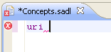
- Ask for completion assistance again (Ctrl-space). This time there is more
than one choice so a pop-up menu appears. Select the Uri option with a double
click or a single click and the Enter key.
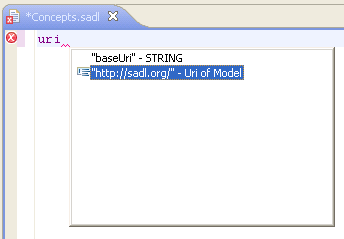
- Make the URI unique to this model by adding some model-specific ending,
e.g, ".../myfamily/concepts".
- At this point you can end the statement with a period or you may again
request assistance (Ctrl-space), in which case your choices will be to add an
End of Sentence (period) or to add version.
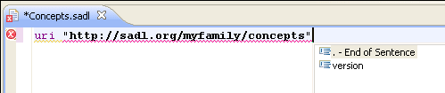
For now, let's end this sentence with a period.
- Press the Enter key to go to the next line. Note: a SADL model must
always end in a space, a tab, or a New Line. This is because the period
is a legal part of a name and the language parser does not know if the period
is an end-of-sentence marker unless it is followed by white space.
The Model Name Can Have Version Information (Quick Fix)
- At this point you will have a warning marker, identified by a yellow
exclamation point and a light bulb (
 ),
in the margin to the left of the first statement in your model.
),
in the margin to the left of the first statement in your model.
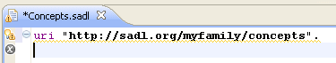
This small light bulb behind the exclamation point indicates that there are
one or more Quick Fixes available for the warning.
- Placing the mouse cursor over the marker will cause the cursor to change
to a hand and an explanation of the warning to be displayed.
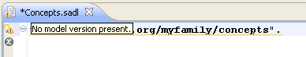
(The cursor isn't shown in this screen shot.) This message indicates that
while it isn't required (this is not an error), including model version
information may be desirable.
- Clicking on the marker will cause a list of fixes to the warning to be
displayed.

- Double-clicking a fix will cause the action to be taken. Double-click on
Add Model Version.
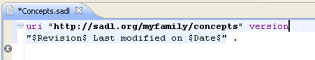
The CVS keywords ($Revision: 1.1 $, $Date: 2013/08/06 17:06:20 $) will be augmented with revision number and last modification date
as soon as the model is checked into CVS. For example, the version information
in this case becomes a string like "$Revision: 1.1 $ Last modified on $Date:
2010/08/06 14:00:16 $".
Note: In SVN, keywords are not necessarily automatically enabled. You may need
to modify the SVN properties of a project or, if you prefer, specific files in
the project to set the SVN keywords you wish to enable. You can do this from
within Eclipse.
Defining Classes and Properties
- Let's begin by declaring the Person concept.
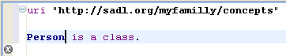
- Let's think about the attributes and relationships that might be important
for the Person class. We will call properties that take data values (numbers,
strings, dates) attributes. We will call properties that relate one instance
to another instance relationships. A Person can have a birthdate, and usually only
one, so that would make it a single-valued attribute. The
resulting class declaration should look like this:
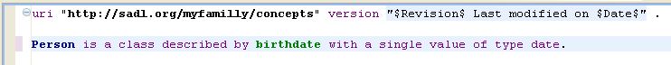
- Let's add two new subclasses of Person.
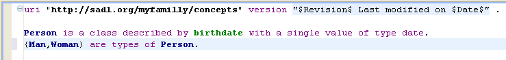
- Now let's go back and add some more information to the Person class. Place
the cursor after "date" and before the period and add the mother
property. We'll take a biological
view in the tutorial and select single-valued relationship. The range of
"mother" will be Woman and the range of "father" will be Man. We'll also
insert a comma, a new-line, and a tab before each of the added clauses to
make it more readable and to avoid very long lines.
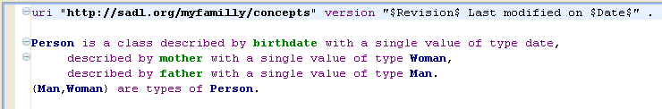
Note that you may click on the
icon front
of Person to hide the detail and make more of the model visible in a given
window. If you do so you can still see the complete definition of Person by
moving the mouse cursor over the icon in front of Person.
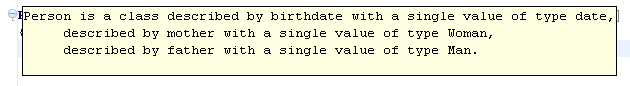
- Finally, let's add some more classes and properties to round out our basic
model. Create a class named Gender. Using the "must be one of" construct, fill in Male as the first name,
fill in Female as the second name.
Gender
is
a
class
must
be
one
of {Male,Female}.
More SADL Constructs for Classes
- Now lets add a restriction that Man and Woman are disjoint, meaning that
an single instance of Person cannot be a member of both classes.
Man
and
Woman
are
disjoint.
- Define {Parent, Father, Mother} as types of Person. Further define a
Parent as a Person with at least one child. We can then define Father as the
intersection of Man and Parent and Mother as the intersection of Woman and
Parent.
{Parent,
Father,
Mother}
are
types
of
Person.
A
Person
is
a
Parent
only
if
child
has
at
least 1
value.
Father
is
the
same
as {Man
and
Parent}.
Mother
is
the
same
as {Woman
and
Parent}.
- Define {Child, Adult} as types of Person. Now you can define Child as
anyone who is not an Adult.
{Child,
Adult} are
types
of
Person.
Child
is
the
same
as
not
Adult.
More SADL Constructs for Properties
- Let's define a new relationship called "spouse". Use the
"relationship-single-valued" template, filling in Person as the domain and the
range of the relationship. With the cursor before the ending period of the
statement (and after a comma perhaps), request help and select the "symmetric"
template.
spouse
describes
Person with
a
single
value
of
type
Person,
is
symmetric.
By making "spouse" symmetric, we allow an OWL reasoner to conclude
that if Eve is the spouse of Adam then Adam is the spouse of Eve. Note that
the "with a single value" phrase places a maximum cardinality restriction on
the spouse property on class Person. To say that spouse is functional (can
only have a single value regardless of the subject class), one would say:
spouse
describes
Person with
values
of
type
Person,
is
symmetric, has a single value.
- Another useful relationship type in OWL is the "inverse of" relationship
between two properties. At the beginning of a new line, ask for help and
select the "inverse of" template. This relationship allows an OWL reasoner to
conclude that if Adam is the parent of Cain, then Cain is the child of Adam,
and vice versa.
parent
describes
Person
with
values
of
type
Person.
parent
is
the
inverse
of
child.
- Yet another useful relationship type in OWL is the transitive property.
Consider this addition to our model.
Location is
a
class,
described
by
latitude
with
a
single
value
of
type
double,
described
by
longitude
with
a
single
value
of
type
double,
described
by
description
with
values
of
type
string.
locatedIn
describes
Location
with
values
of
type
Location,
is
transitive.
By making "locatedIn" a transitive property, we allow an OWL reasoner
to conclude that if Atlanta is locatedIn Georgia, and Georgia is locatedIn the
USA, then Atlanta is locatedIn the USA.
More SADL Constructs for Instances
- To better illustrate some of the new instance support in SADL V2, we will
first refactor our model (not an uncommon practice in the early stages of a
modeling project). We will move information which was previously associated
directly with a Person, specifically the "birthdate" and "mother", into a
subtype of Event called Birth. Here's the revised definition of Person:
Person is
a
class
described
by
birth
with
a
single
value
of
type
Birth,
described
by
father
with
a
single
value
of
type
Man,
described
by
gender
with
a
single
value
of
type
Gender.
Here's the Event and Birth definitions:
Event
is
a
class,
described
by
location
with
a
single
value
of
type
Location,
described
by
when
with
a
single
value
of
type
date.
Birth
is
a
type
of
Event
described
by
mother
with
a
single
value
of
type
Person,
described
by
child
with
values
of
type
Person.
Note that our definition of "parent" as the inverse of "child" no longer
makes sense so we remove it from the model. Since we didn't do anything with
"parent" other than illustrate the concept of an inverse relationship, we also
remove it. Note also that since Birth is a type of Event, Birth is also
described by "location" and "when" properties. Note that
"child" is not restricted to a single value--a Birth can have multiple
children.
- We will create a new file (model) to populate with instance data relating
to a particular group of people. (It wouldn't make much sense to define the
general concepts of a genealogy model and put some very specific instance data
in the same model.) We create a new file George.sadl with this initial
content:
uri
"http://sadl.org/myfamily/george"
version "$Revision: 1.1 $ Last
modified on $Date: 2013/08/06 17:06:20 $" .
import "Concepts.sadl"
as cpt.
Note that our new model imports our Concepts model so that we can use
the classes and properties we've already defined.
- Now we are ready to illustrate one of the new instance data features of
Version 2. Note that many (most) of the instances of things in the real world
are not given unique names. This is even more true of instances of
non-physical concepts. We identify these by their relationship to something
else: "Mary's car", "John's party", "my address". Even when something has a
name, we may wish to identify it in the context of something else. Consider
this instance declaration.
George
is
a
Person
has
birth
(a
Birth
with
mother (a
Person
Mary),
with
location
(a
Location
with
latitude
38.186111, with
longitude
-76.930556, with
description
"Pope's Creek Estate"),
with
when
"1732-02-22").
Note that we have not had to give a name to the Birth--it's George's
Birth; we have not had to give a name to the Location, although it has a
human-readable description which is not a legal URI name; and note that Mary
is defined as a Person in-line rather than somewhere else in the model.
- SADL V2 allows instance data statements to be in several different
formats. For example, the following are all equivalent statements:
George
spouse
Martha.
George
has
spouse
Martha.
Martha
is
the
spouse
of
George.
The
spouse
of
George
is
Martha.
George
with
spouse
Martha.
Furthermore, these various orderings of subject, predicate, and object
and various optional connective words are consistently available in rules,
queries, and tests as well as in instance data declarations.
- OWL assumes an Open World, meaning that just because I don't know
something is true doesn't mean that I can conclude that it is false. In other words, I don't
assume that I know everything there is to know. Therefore we may sometimes
wish to express that we know that two instances are not the same instance. For
example,
George
is
not
the
same
as
Mary.
- Similarly, we might wish to state that two instances are, in fact, the
same instance, meaning that the instance has two different names. This is
particularly useful if we are using two ontologies that have different
names for the identical instance. For example,
GeorgeWashington
is
the
same
as
George.
Note that we can also say a similar thing about two classes or two
properties. In SADL "is the same as" is used for instances, classes, and
properties although the OWL translation is to different OWL constructs.
Summary and Conclusion
This version of the SADL V2 Quick Start Tutorial does not cover all of SADL
functionality. Rather it is meant to illustrate two key additions to SADL V2 and
assumes some familiarity with SADL V1. These key additions are: 1) much richer
assistance for model authors including statement completion, templates, hyper
linking to definitions, etc., and 2) full support of OWL-DL. The tutorial will
be expanded as the rest of SADL functionality is implemented in V2. Yet to be
implemented and included are:
- Rules and expressions
- Queries
- Explanations
- Tests and test suites